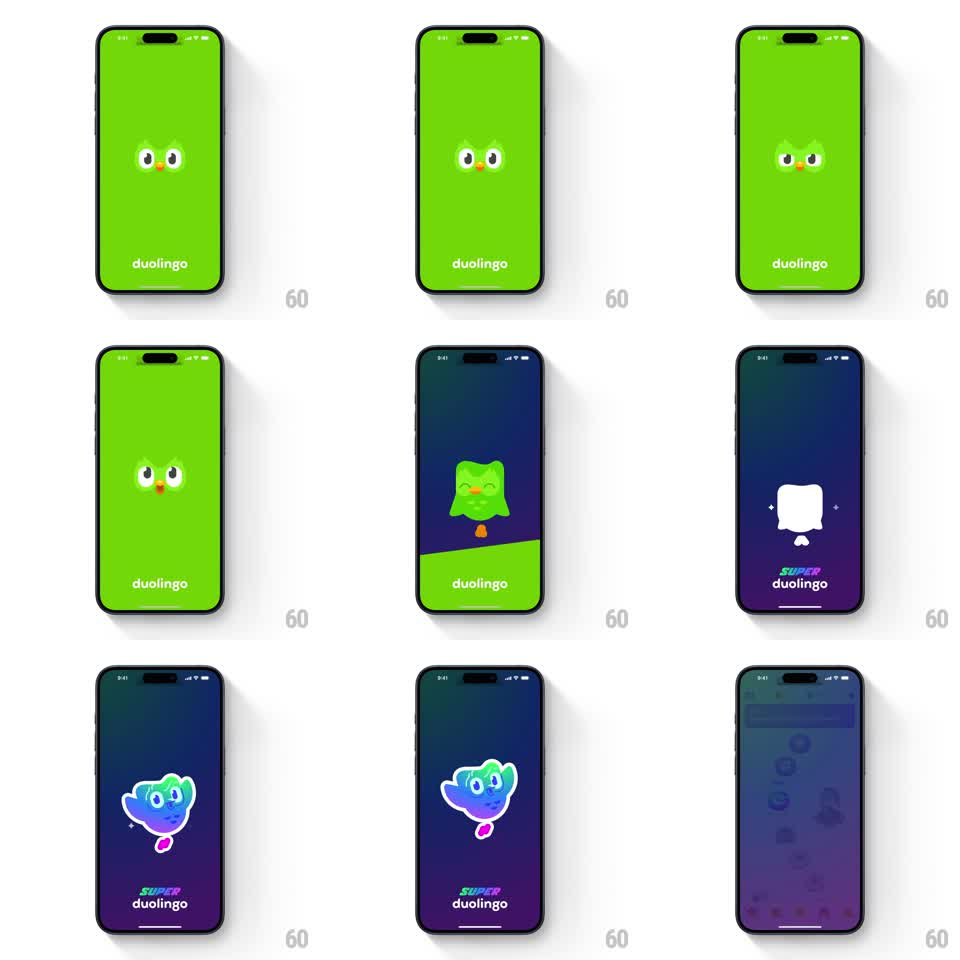

Media
Frame-by-frame

Rebuild this animation 1:1: Duolingo's Super splash morph - the classic green splash (Duo's eyes over the wordmark) sweeps into a dark premium backdrop as the mascot transforms from flat green to a holographic iridescent Super Duo, then hands off to the app home.

Rebuild this animation 1:1: Duolingo's Super splash morph - the classic green splash (Duo's eyes over the wordmark) sweeps into a dark premium backdrop as the mascot transforms from flat green to a holographic iridescent Super Duo, then hands off to the app home. ## Integration Integration: stack-agnostic spec - springs given as stiffness/damping, timed motions as duration + curve; map every value to your framework and animation library of choice. ## Scene Stage 1: brand-green full screen, Duo's eyes + beak at center, "duolingo" wordmark bottom. Stage 2: dark navy-to-purple gradient screen, mascot center, "SUPER duolingo" wordmark bottom. Stage 3: blurred app home (lesson path) fading in. ## Motion spec Pattern: multi-stage brand morph. - Eyes idle: Duo's pupils glance (quick 100ms darts) on the green field (~1s). - Background sweep: a dark wave wipes upward, replacing green with the navy-purple gradient (~400ms, ease-in). - Mascot morph: the green body flashes to a white silhouette (150ms), then iridescent rainbow color floods across it left to right (~400ms) - wings spread, a pink accent appears at the base; small sparkles pop at the wing tips. - Wordmark swap: "duolingo" crossfades to "SUPER duolingo" (200ms) as the color flood completes. - Exit: whole splash blurs and scales 1 -> 1.05 while the home screen fades in beneath (~350ms). ## Calibration - The white-silhouette beat between green and holographic is what makes the morph read - do not skip it. - Iridescence is a gradient wash across the mascot, not a color swap. ## Reduced motion Green splash crossfades to the dark Super splash (250ms), then to home. ## Don't miss - Eyes animate BEFORE the transition starts, establishing the classic splash first. - The handoff to home is a blur-through, not a hard navigation cut.